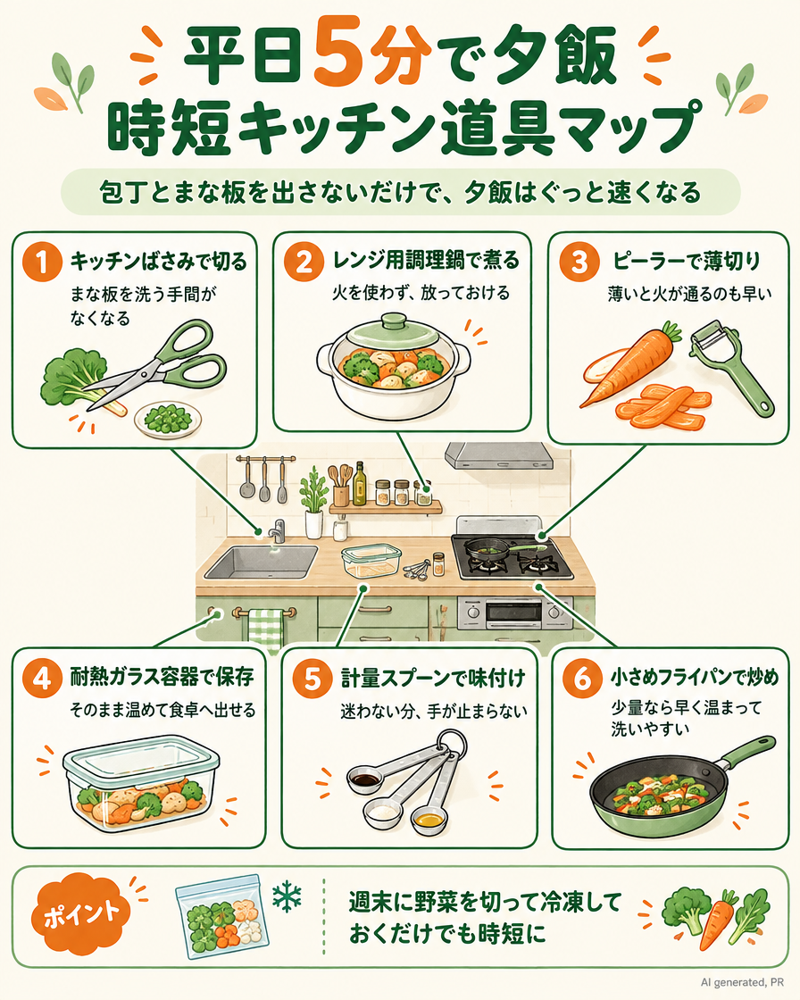

【PR】本ページはプロモーションを含みます（Amazonアソシエイト・楽天アフィリエイトを利用しています）
平日5分で夕飯 時短キッチン道具マップ
包丁とまな板を出さないだけで、夕飯はぐっと速くなる

平日の夕方って、子どもはお腹すいたと言うし、時間はないしで本当にバタバタですよね。包丁やコンロをなるべく使わずに済む、時短の料理道具をまとめてみました。手ごろなものばかりなので、気になるものから少しずつ取り入れてみてくださいね。
1キッチンばさみで切る
まな板を洗う手間がなくなる
Amazonで「キッチンばさみ 分解」を見る
楽天なら（レビューの多い人気商品）
キャップ付き★キッチンバサミ 分解 ステンレス キッチンばさみ 食洗機 持ち運び まな板いらず キッ
2レンジ用調理鍋で煮る
火を使わず、放っておける
Amazonで「電子レンジ 調理鍋」を見る
楽天なら（レビューの多い人気商品）
レンジ鍋 グリル鍋 電子レンジ 一人暮らし レンジ料理 調理鍋 フタ付 焼く 蒸す 炒める 茹でる
3ピーラーで薄切り
薄いと火が通るのも早い
Amazonで「ピーラー 千切り」を見る
楽天なら（レビューの多い人気商品）
【ネコポス送料無料】ピーラー 貝印 ピーラー セレクト100 T型ピーラー DH-3000【代引き・
4耐熱ガラス容器で保存
そのまま温めて食卓へ出せる
Amazonで「耐熱ガラス 保存容器」を見る
楽天なら（レビューの多い人気商品）
＼限定カラーあり★／ iwaki 耐熱ガラス 保存容器 耐熱容器 7点セット 食洗器対応 レンジ オ
5計量スプーンで味付け
迷わない分、手が止まらない
Amazonで「計量スプーン セット」を見る6小さめフライパンで炒め
少量なら早く温まって洗いやすい
Amazonで「フライパン 20cm」を見る
楽天なら（レビューの多い人気商品）
初心者でも簡単！【★限定特典付き】【3年保証＆名入れ無料】リバーライト 極JAPAN 鉄フライパン
💡 ポイント：週末に野菜を切って冷凍しておくだけでも時短に